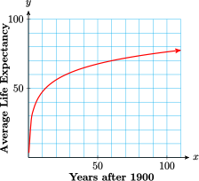

Section 10.1 Logarithmic Functions
In this section we study logarithmic functions. For example,
is a logarithmic function. In order to understand logarithmic functions better, we first investigate how they are related to more familiar functions, the exponential functions.
Subsection Inverse of a Function
You know that raising to the \(n\)th power and taking \(n\)th roots are inverse operations. For example, if we first cube a number and then take its cube root, we return to the original number.
Now consider the functions that describe those operations: The graphs of \(f(x)=x^3\) and \(g(x)=\sqrt[3]{x}\) are related in an interesting way, as shown below.
If we place a mirror along the line \(y=x\text{,}\) each graph is the reflection of the other. We say that the graphs are "symmetric about the line \(y=x\text{.}\)"
The two functions \(f(x)=x^3\) and \(g(x)=\sqrt[3]{x}\) are called inverse functions. Look at the tables of values for the two functions.
| \(x\) | \(-2\) | \(-1\) | \(\dfrac{-1}{2}\) | \(0\) | \(\dfrac{1}{2}\) | \(1\) | \(2\) |
| \(f(x)\) | \(-8\) | \(-1\) | \(\dfrac{-1}{8}\) | \(0\) | \(\dfrac{1}{8}\) | \(1\) | \(8\) |
| \(x\) | \(-8\) | \(-1\) | \(\dfrac{-1}{8}\) | \(0\) | \(\dfrac{1}{8}\) | \(1\) | \(8\) |
| \(g(x)\) | \(-2\) | \(-1\) | \(\dfrac{-1}{2}\) | \(0\) | \(\dfrac{1}{2}\) | \(1\) | \(2\) |
By interchanging the rows in the table for \(f(x)\text{,}\) we get the table for \(g(x)\text{.}\) This makes sense when we recall that each function undoes the effect of the other. In fact, we define the cube root function by
Checkpoint 10.1. Quickcheck 1.
Subsection Inverse of an Exponential Function
A similar rule relates the operations of raising a base \(b\) to a power and taking a base \(b\) logarithm.
So the function \(g(x)=\log_b {x}\) is the inverse function for \(f(x)=b^x\text{.}\) Each function undoes the effect of the other. For example, let \(f(x)=2^x\) and \(g(x)=\log_2 {x}\text{.}\) Start with \(x=3\text{,}\) apply \(f\text{,}\) and then apply \(g\) to the result.
We return to the original number, 3.
We can write these operations in one expression as
(Remember the order of operations: do what's inside of parentheses first.) Because the log and the exponential are inverse functions, this identity holds for any value of \(x\) and any base \(b \gt 0\text{.}\) That is
We can also apply the two functions in the opposite order, so that
(This one is harder to see, but we compute the exponent, \(\log_2{8}\text{,}\) first.) And in general
Checkpoint 10.2. Practice 1.
Subsection Graphs of Logarithmic Functions
What does the graph of a log function look like? We can use exponential functions to help us.
Example 10.3.
Graph \(g(x)=\log_2{x}\)
We can make a table of values for \(g(x)=\log_2{x}\) by interchanging the columns in a table for \(f(x)=2^x\text{.}\)
| \(x\) | \(f(x)=2^x\) |
| \(-2\) | \(\dfrac{1}{4}\) |
| \(-1\) | \(\dfrac{1}{2}\) |
| \(0\) | \(1\) |
| \(1\) | \(2\) |
| \(2\) | \(4\) |
| \(3\) | \(8\) |
| \(x\) | \(g(x)=\log_2{x}\) |
| \(\dfrac{1}{4}\) | \(-2\) |
| \(\dfrac{1}{2}\) | \(-1\) |
| \(1\) | \(0\) |
| \(2\) | \(1\) |
| \(4\) | \(2\) |
| \(8\) | \(3\) |
We plot the points for each function, connecting them with smooth curves, as shown below. You can see that the two graphs are symmetric about the line \(y=x\text{.}\)
The same technique works for graphing a log function with any base.
Checkpoint 10.4. Practice 2.
Checkpoint 10.5. QuickCheck 2.
Did you notice that the graphs of the log functions do not have any points with negative \(x\)-coordinates? This is because an exponential function has no negative (or zero) output values, so a log function has no negative or zero input values. In other words,
We cannot take the log of a negative number or zero.
You can also see that while an exponential growth function increases very rapidly for positive input values, its inverse, the logarithmic function, grows extremely slowly. In addition, the logarithmic function has the following properties.
Properties of Log Functions.
For any base \(b \gt 0, b \ne 1\text{:}\)
- The logarithmic function \(y = \log_b x\) is defined for positive \(x\) only.
- The \(x\)-intercept of its graph is \((1,0)\text{.}\)
- The graph has a vertical asymptote at \(x=0\text{.}\)
- The graphs of \(y = \log_b x\) and \(y=b^x\) are symmetric about the line \(y=x\text{.}\)
Checkpoint 10.6. QuickCheck 3.
Subsection Using Logarithmic Functions
We can use the LOG key on a calculator to evaluate the function \(f(x) = \log_{10}{x}\text{.}\)
Example 10.7.
Let \(f(x) = \log_{10}{x}\text{.}\) Evaluate the following expressions.
- \(\displaystyle f(35)\)
- \(\displaystyle f(-8)\)
- \(\displaystyle 2 f(16) + 1\)
- \(\displaystyle f (35) = \log_{10}{35}\approx 1.544\)
- \(f(-8)\text{,}\) or \(\log_{10}{(-8)}\text{,}\) is undefined.
- \(\displaystyle 2 f(16) + 1 = 2(\log_{10}{16}) + 1 \approx 2(1.204) + 1 = 3.408\)
Checkpoint 10.8. Practice 3.
Example 10.9.
Evaluate the expression \(~~T=\dfrac{1}{k}\log_{10}{\left(\dfrac{M_f}{M_0}+1\right)}~\) for \(k=0.028, ~M_f=1832\text{,}\) and \(M_0=15.3\text{.}\)
Follow the order of operations and calculate
A calculator keying sequence for the calculation is
\(\qquad\qquad\)LOG \(1832\) ÷ \(15.3\) + \(1\) ) ÷ \(0.028\) ENTER
Checkpoint 10.10. Practice 4.
Logarithmic functions are useful for modeling increasing functions that slow down as the input increases.
Example 10.11.
In 1900, the average life expectancy at birth in the U.S. was 47.3 years. Since then, life expectancy has increased according to the formula
where \(x\) is the number of years after 1900.
- Graph the life expectancy function for the years 1900 to 2010.
- The life expectancy in 1950 was 68.2 years. What does the function \(L(x)\) predict for life expectancy in 1950?
- How much did life expectancy increase between 1920 and 1930? How much did it increase between 1990 and 2000?
-
We can make a table of values and plot points to obtain the graph below.
\(x\) \(0\) \(20\) \(40\) \(60\) \(80\) \(100\) \(L(x)\) \(47.3\) \(56.2\) \(64.9\) \(70.0\) \(73.6\) \(76.4\)  -
We substitute \(x=50\) into the function to find
\begin{equation*} L(50) = 18.53 + 28.92 \log {50} \approx 67.7 \end{equation*}The function predicts a life expectancy of 67.7 years in 1950.
- Between 1920 and 1930, life expectancy increased from 56.2 to 61.2, or 5 years. Between 1990 and 2000 it increased from 75.0 to 76.4, or 1.4 years.
Checkpoint 10.12. Practice 5.
Checkpoint 10.13. QuickCheck 4.
Subsection Solving Logarithmic Equations
A logarithmic equation is one in which the variable appears inside of a logarithm. For example,
is a log equation.
If there is only one log involved, we can use the conversion formula to write the equation in exponential form.
Example 10.14.
Solve \(~\log_4{(2x-8)}=3\text{.}\)
We use the conversion formula to write the equation in exponential form.
The solution is 36.
Checkpoint 10.15. Practice 6.
Caution 10.16.
Remember that we cannot take a logarithm of a negative number or zero, because the output of an exponential function is always positive.
For example suppose that \(\log_5{(-25)} = x\text{.}\) Then \(5^x = -25\text{.}\) But this is impossible, because \(5^x\) cannot be negative. Thus, the log of a negative number (or zero) is undefined.
Because of this fact, extraneous solutions can arise when we solve logarithmic equations.
If the equation contains more than one log, we must first combine any expressions involving logs into a single logarithm.
Example 10.17.
Solve \(~~\log_{10}{(x + 1)} + \log_{10}{(x - 2)}= 1\text{.}\)
We use Property (1) of logarithms to rewrite the left-hand side as a single logarithm:
Once the left-hand side is expressed as a single logarithm, we can rewrite the equation in exponential form as
Simplifying the right side gives us a quadratic equation to solve.
We find \(x = 4\) or \(x = -3\text{.}\) But we must check the original equation for extraneous solutions. The number \(-3\) is not a solution of the original equation, because neither \(\log_{10}{(x + 1)}\) nor \(\log_{10}{(x - 2)}\) is defined for \(x = -3\text{.}\) The apparent solution \(x=-3\) is extraneous, and the solution of the original equation is \(4\text{.}\)
Checkpoint 10.18. Practice 7.
Checkpoint 10.19. QuickCheck 5.
Exercises Problem Set 10.1
Warm Up
For Problems 1–4, convert the logarithmic equation into exponential form.
1.
\(\log_9{729}=y\)2.
\(\log_b{8}=-3\)3.
\(\log_{10}{C}=-4.5\)4.
\(\log_m{n}=p\)For Problems 5–8, write the expression as a single log with a coefficient of 1.
5.
\(\dfrac{1}{2}\log_b{16}+2\left(\log_b{2}-\log_b{8}\right)\)6.
\(\dfrac{1}{2}\left(\log_5{6}+2\log_5{4}\right)-\log_5{2}\)7.
\(\dfrac{1}{2}\left(\log_{10}{y}+\log_{10}{x}-3\log_{10}{z}\right)\)8.
\(\dfrac{1}{3}\left(\log_{10}{x}-2\log_{10}{y}-\log_{10}{z}\right)\)Skills Practice
For Problems 9 and 10,
- Make a table of values for each function.
- Graph both functions on the same set of axes.
9.
\(f(x) = 3^x\text{,}\) \(\quad g(x) = \log_3{x}\)
10.
\(f(x) = \left(\dfrac{1}{2}\right)^x\text{,}\) \(g(x) = \log_{1/2}{x}\)
For Problems 11 and 12, \(f(x)=\log_{10}{x}\text{.}\) Evaluate the expression, and round the answer to four decimal places.
11.
- \(\displaystyle 18-5f(3)\)
- \(\displaystyle \dfrac{2}{5+f(0.6)}\)
12.
- \(\displaystyle 15-4f(7)\)
- \(\displaystyle \dfrac{3}{2+f(0.2)}\)
For Problems 13 and 14, evaluate the expression.
13.
\(R=\dfrac{1}{L}\log_{10}{\left(\dfrac{P}{L-P}\right)}~\text{,}\) for \(L=8500\) and \(P=3600\)
14.
\(M=\sqrt{\dfrac{\log_{10}H}{k\log_{10}H_0}}~\text{,}\) for \(H=0.93,~H_0 = 0.02\text{,}\) and \(k=0.006\)
For Problems 15 and 16, \(f(x)=\log_{10}{x}\text{.}\) Solve for \(x\text{.}\)
15.
- \(\displaystyle f(x)=1.41\)
- \(\displaystyle f(x)=0.52\)
16.
- \(\displaystyle f(x)=0.8\)
- \(\displaystyle f(x)=-1.3\)
For Problems 17 and 18, solve for the unknown variable.
17.
- \(\displaystyle \log_2{y}=-1\)
- \(\displaystyle \log_b{0.1}=-1\)
18.
- \(\displaystyle 3(\log_7{x})+5=7\)
- \(\displaystyle 5(\log_2{x})+6=-14\)
19.
Let \(f(x)=3^x\) and \(g(x)=\log_3{x}\)
- Compute \(f(4)\)
- Compute \(g\left[f(4)\right]\)
- Compute \(\log_3{3^{1.8}}\)
- Compute \(\log_3{3^{a}}\)
20.
Let \(f(x)=\log_2{x}\) and \(g(x)=2^x\)
- Compute \(f(32)\)
- Compute \(g\left[f(32)\right]\)
- Compute \(2^{\log_2{6}}\)
- Compute \(2^{\log_2{Q}}\)
21.
Each figure shows a portion of the graph of one of the following functions. Match each function with its graph.

- \(\displaystyle f(x)=2^x\)
- \(\displaystyle f(x)=x^2\)
- \(\displaystyle f(x)=\dfrac{2}{x}\)
- \(\displaystyle f(x)=\sqrt{x}\)
- \(\displaystyle f(x)=\log_2{x}\)
- \(\displaystyle f(x)=\left(\dfrac{1}{2}\right)^x\)
22.
Choose the graph for each function described below.
- The area, \(A\text{,}\) of a pentagon is a quadratic function of the length \(l\text{,}\) of its side.
- The strength, \(F\text{,}\) of a hurricane varies inversely with its speed, \(s\text{.}\)
- The price of food has increased 3% every year for a decade.
- The magnitude, \(M\text{,}\) of a star is a logarithmic function of its brightness, \(I\text{.}\)
- The speed of the train increased at a constant rate.
- if you don't practice a foreign language, you lose \(\dfrac{1}{8}\) of the words in your working vocabulary each year.

23.
- How large must \(x\) be before the graph of \(y=\log_{10}{x}\) reaches a height of 4?
- How large must \(x\) be before the graph of \(y=\log_{10}{x}\) reaches a height of 8?
24.
- How large must \(x\) be before the graph of \(y=\log_2{x}\) reaches a height of 5?
- How large must \(x\) be before the graph of \(y=\log_2{x}\) reaches a height of 10?
For Problems 25–28, solve the logarithmic equation.
25.
\(\log_{10} x + \log_{10}(x + 21) = 2\)
26.
\(\log_{8} (x+5) - \log_{8}2 = 1\)
27.
\(\log_{10} (x+2) + \log_{10}(x-1) = 1\)
28.
\(\log_{3} (x-2) - \log_{3}(x+1) = 3\)
Applications
29.
In a psychology experiment, volunteers were asked to memorize a list of nonsense words, and 24 hours later they were tested to see how many of the words they recalled. On average, the subjects had forgotten 20% of the words. The researchers found that the more lists their volunteers memorized, the larger the fraction of words they were unable to recall. (Source: Underwood, Scientific American, vol. 210, no. 3)
| Number of lists, \(n\) | \(1\) | \(4\) | \(8\) | \(12\) | \(16\) | \(20\) |
| Percent forgotten, \(F\) | \(20\) | \(40\) | \(55\) | \(66\) | \(74\) | \(80\) |
Plot the data. What sort of function seems to fit the data points?
-
Psychologists often describe rates of forgetting by logarithmic functions. Graph the function
\begin{equation*} f(n) = 16.6 + 46.3 \log {n} \end{equation*}on the same graph with your data. Comment on the fit.
What happens to the values of \(f(n)\) as \(n\) grows increasingly large? Does this behavior accurately reflect the situation being modeled?
30.
The water velocity at any point in a stream or river is related to the logarithm of the depth at that point. For the Hoback River near Bondurant, Wyoming,
where \(v\) is the velocity of the water, in feet per second, and \(d\) is the vertical distance from the stream bed, in feet, at that point. For Pole Creek near Pinedale, Wyoming,
Both streams are \(1.2\) feet deep at the locations mentioned. (Source: Leopold, Luna, Wolman, and Gordon, 1992)
-
Complete the table of values for each stream.
Distance from bed (feet) \(0.2\) \(0.4\) \(0.6\) \(0.8\) \(1.0\) \(1.2\) Velocity, Hoback
River, (ft/sec)Velocity, Pole Creek (ft/sec) If you double the distance from the bed, by how much does the velocity increase in each stream?
Plot both functions on the same graph.
The average velocity of the entire stream can be closely approximated as follows: Measure the velocity at 20% of the total depth of the stream from the surface and at 80% of the total depth, then average these two values. Find the average velocity for the Hoback River and for Pole Creek.
31.
In Example 10.11 of this section, we considered a formula for the average life expectancy in the U.S. as a function of years after 1900,
According to the formula, in what year was the life expectancy 70 years?
32.
In Practice 5 of this section, we considerd a formula for the average height, in centimeters, of girls between the ages of 2 and 20.
According to the formula, at what age should a girl expect to be 152.4 centimeters (5 feet) tall?